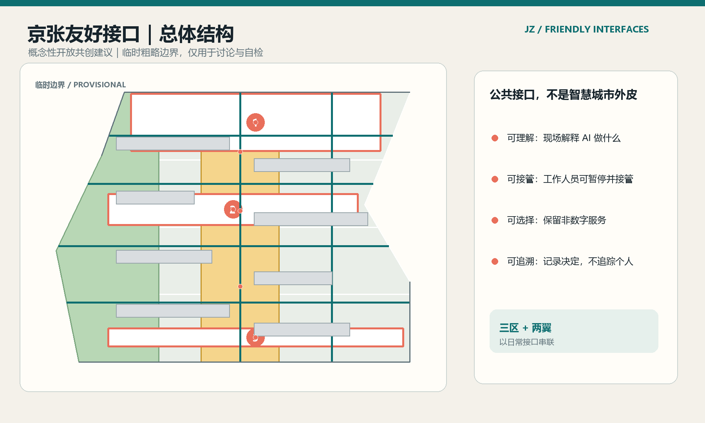
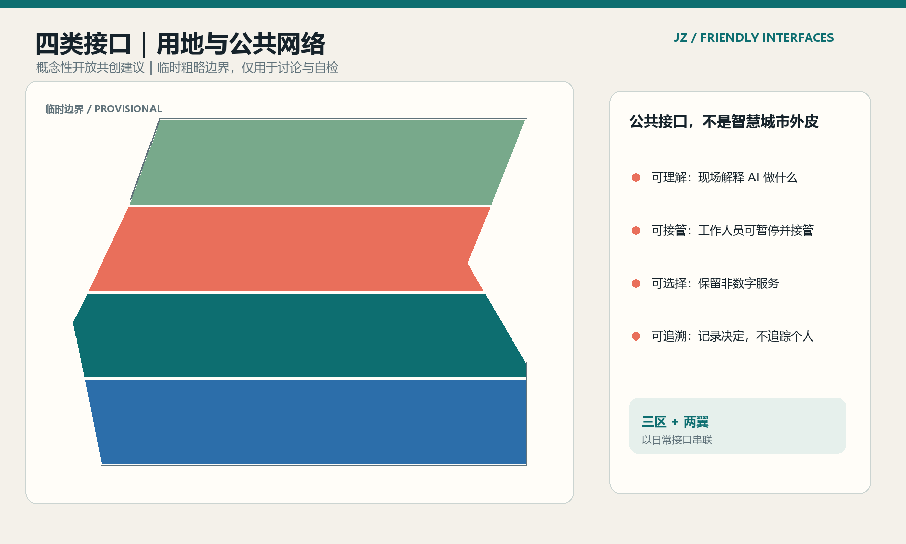
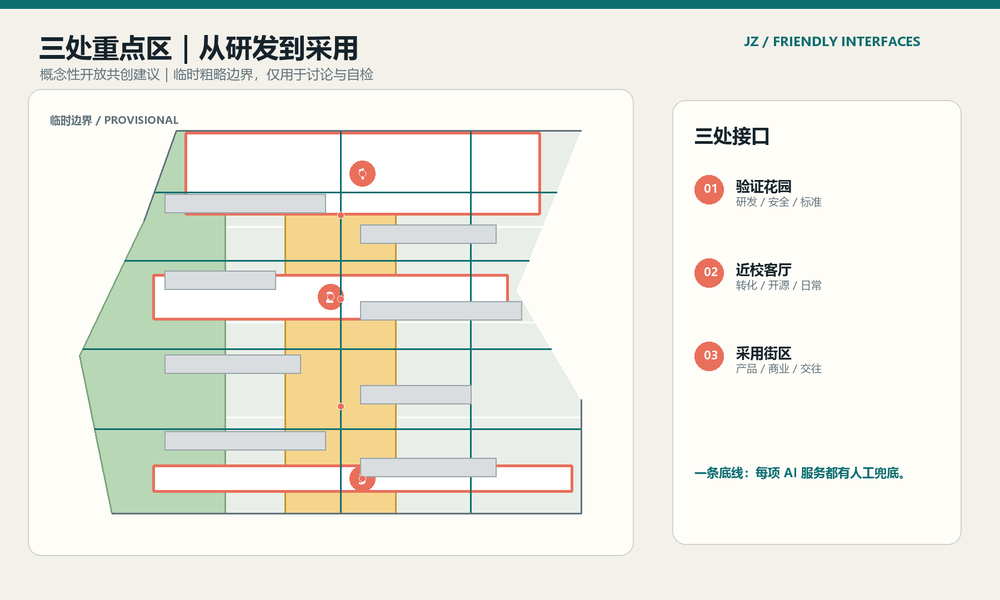
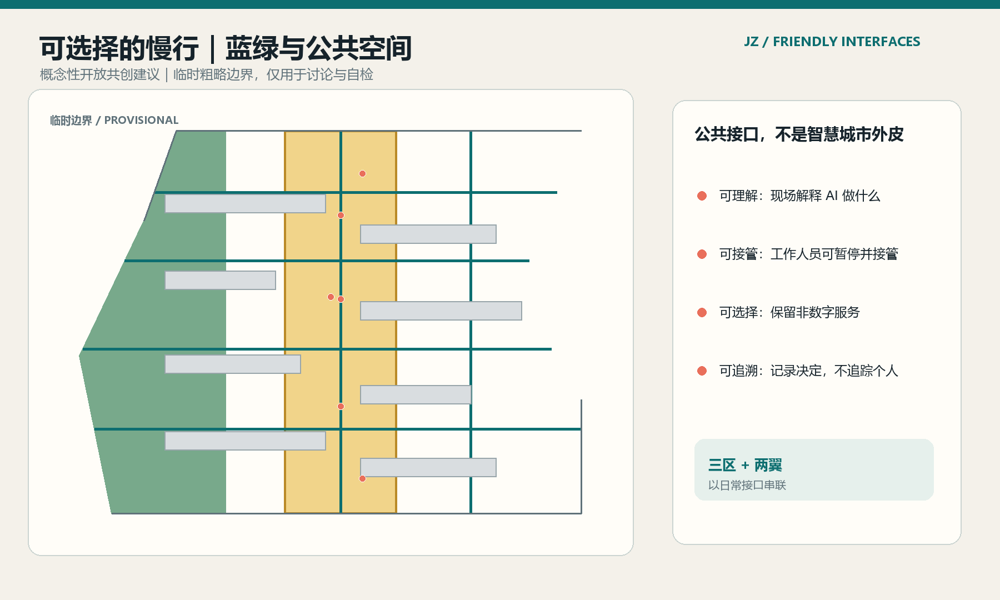
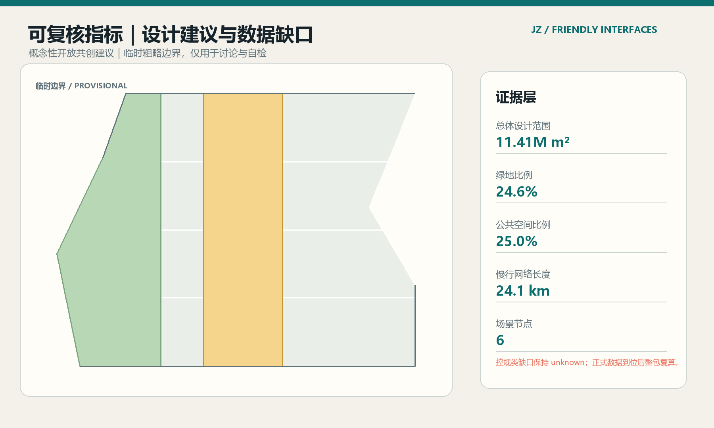

京张友好接口
让 AI 成为可理解、可接管、可退出的日常公共基础设施
JZ / FRIENDLY INTERFACES
临时边界概念方案
临时边界概念方案
本方案是开放共创建议。临时粗略边界不构成官方红线、法定控制、审批结论或实施承诺。
总览地图 / Spatial overview

接口规则
创新带里的 AI 要先可理解，再谈惊艳。人们能看懂它做什么、决定用不用，并在每个节点找到人工兜底。
三区 + 两翼
用日常公共接口连接，而不是依赖一座孤立的“未来建筑”。
三层范围 · 重点区域 / Three-level scope
统筹研究、总体设计与重点区详细设计，通过三区差异化定位和两翼服务接口相互连接。
核心指标 / Auditable snapshot
总体设计范围11.41M m²由提交几何复算
绿地比例24.6%由提交几何复算
公共空间比例25.0%由提交几何复算
慢行网络24.1 km由提交几何复算
场景节点6由提交几何复算
四项公共接口承诺
01
先解释
每项服务先说明用途、数据边界与运营人。
02
可接管
任何人都能暂停、接管或转到线下服务。
03
可选择
没有智能账号或手机，城市仍然可用。
04
可追责
以聚合日志支持复盘，不追踪个人生活。
用地分区 · 交通慢行 · 蓝绿公共空间
用地分区与公共网络

三处重点区

交通慢行与蓝绿公共空间

指标与数据缺口

重点区程序
| 重点区 | 空间接口 | AI重点 |
|---|---|---|
| 众智园 | 验证花园 | 研发、标准、安全治理 |
| AI原点社区 | 近校生活客厅 | 成果转化、开源、人才日常 |
| 大钟寺 | 采用街区 | 智能原生产品、商业、交往 |
建筑 · 更新项目 · AI 场景
保留、改造和轻量新建均为概念动作；正文包含十张场景卡、三类产业测试和五类用户画像。
任务覆盖 · 自检状态
方案包已映射公告任务、agent.1-agent.6、专业标准、空间图层、指标和图件；当前状态：临时边界，待正式数据复算。